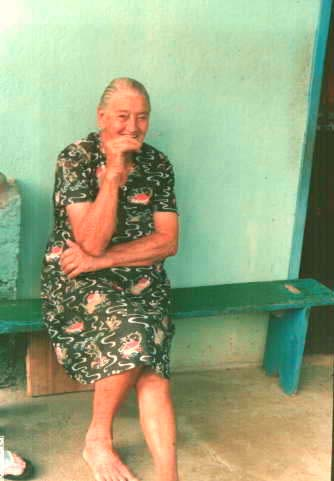
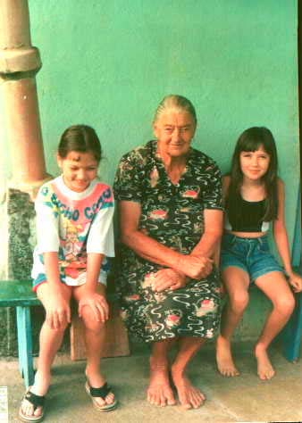

Jacinta
Ver na árvore interativa ✏️ Sugerir correção ➕ Acrescentar filho(a) 📷 Enviar foto ou documento
🔑 Os botões acima só funcionam com uma conta no GitHub (é gratuita e leva poucos minutos: criar conta). Sem conta? Peça a um parente que tenha conta para enviar por você.
⏳ As sugestões são revisadas antes de entrar no site, o que pode levar alguns dias. Saiba mais
Dados
- Cônjuge
- Sebastião Partelli
- Residência
- norte do ES
- Pais
- Jose ~1886 e Dosolina Dalfiôr (~ 1888) natural da Itália, filha de Ferdinando Daifior e Maria Pauli
Família
Filhos (7)
Irmãos (8)
- Maria ~1912 †
- Antonio⚭ Osilia Balarini · 7 filhos
- Afonso⚭ Arminda Curitiba · 11 filhos
- Luiz †
- Josefina⚭ Rafael Monteiro · 6 filhos
- Domingos 1925⚭ Rosalina Balarini · 11 filhos
- Rosa⚭ Aristides Basso · 5 filhos
- Benjamim⚭ Lucia D'angeles · 6 filhos
Fotos




Contexto histórico
Informações sobre lugares e fatos citados acima, pesquisadas em fontes públicas na web. Não são dados pessoais desta pessoa.
Onde a família viveu Migração para o norte do Espírito Santo
Nos anos 1940 o governo do Espírito Santo incentivou a ocupação do norte do estado; os primeiros colonos de origem italiana de Jaguaré chegaram por volta de 1946, vindos principalmente do distrito de Jaciguá. Encontraram terras planas, mas cobertas de mata nativa.
Pasta de origem: 01Giacomo/02Giovanni/01Jose/02Jacinta/